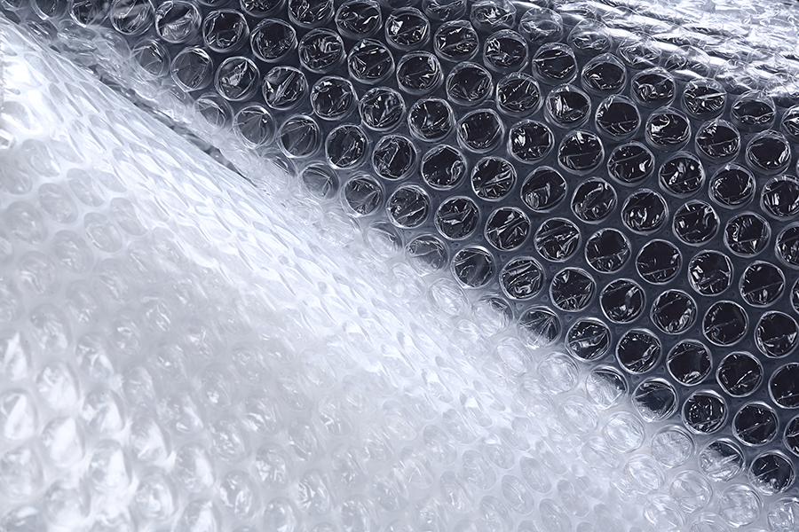
Légpárnás fólia (Buborékfólia)
Kiváló ütéscsillapító, tekercsben kapható, így bármilyen méretre vágható.
A csomagolás során a térkitöltő anyag kiválasztása nemcsak a termék biztonsága, hanem a költséghatékonyság és a fenntarthatóság szempontjából is kulcsfontosságú. [cite: 7]
Bár a környezetvédelmi szempontok miatt visszaszorulóban vannak, hatékonyságuk és könnyű súlyuk miatt még mindig népszerűek.

Kiváló ütéscsillapító, tekercsben kapható, így bármilyen méretre vágható.
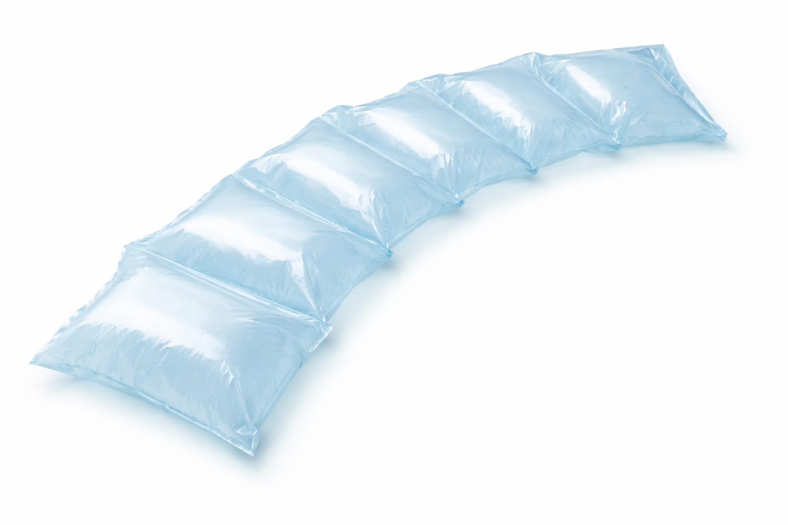
Géppel fújt, levegővel telt zacskók. Nagyon könnyűek, így nem növelik a szállítási költséget.
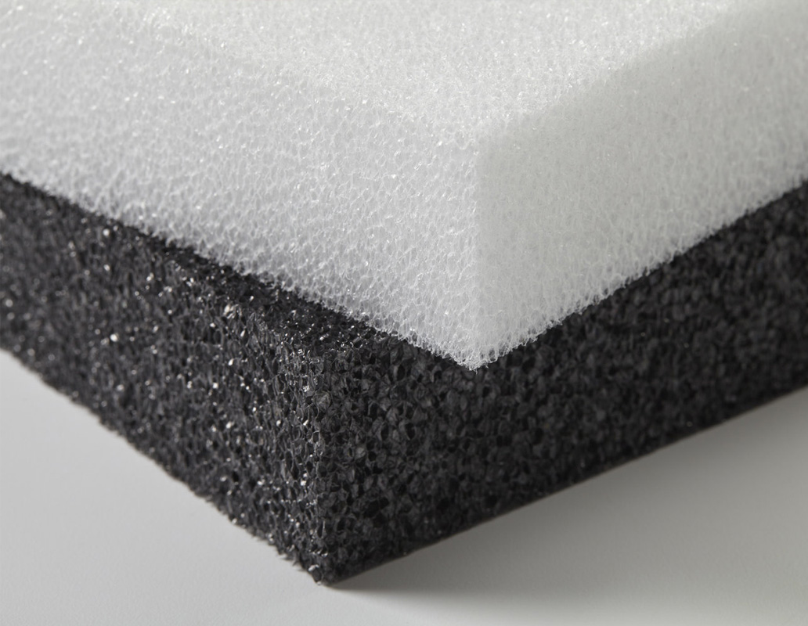
Puha, karcmentes védelmet nyújt, ideális elektronikai eszközökhöz vagy bútorokhoz.
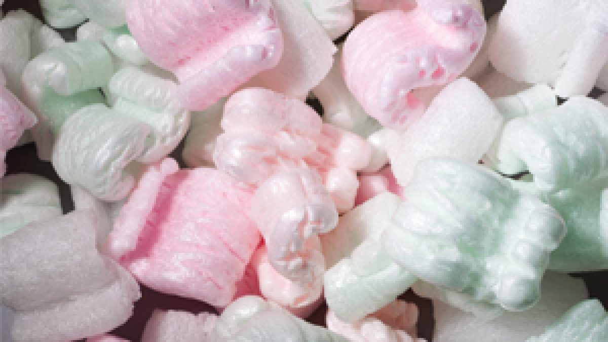
Hagyományos megoldás, ami kitölti az üres tereket, de hajlamos az elmozdulásra a dobozon belül.
A legnépszerűbb környezetbarát alternatívák, mivel könnyen újrahasznosíthatóak és professzionális megjelenést kölcsönöznek.
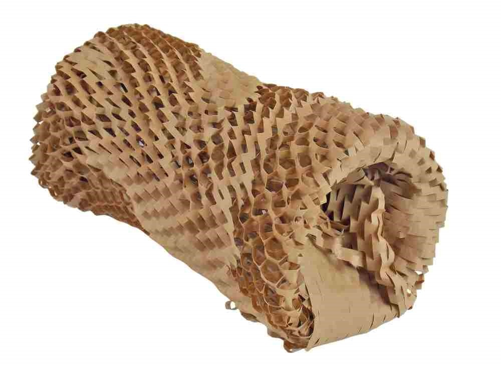
Gyűrt állapotban kiváló ütéscsillapító. Léteznek hozzá adagoló gépek is, de kézzel is formázható.
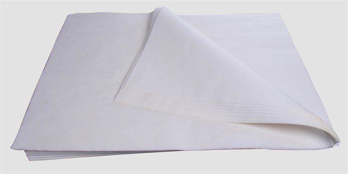
Elsősorban esztétikai célokra és karcolás elleni védelemre (pl. cipők, ruhák, ékszerek) használják.
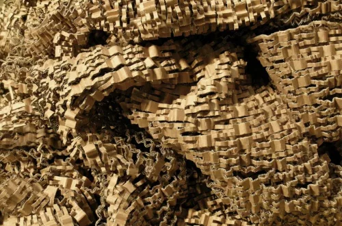
Cikkcakk alakúra vágott papírcsíkok. Gyakran használják ajándékkosarakhoz és prémium termékekhez.
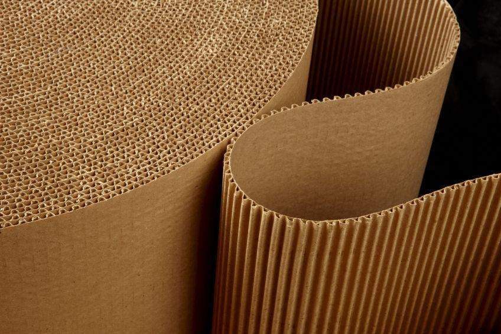
Erős tartást ad, gyakran használják törékeny üvegek elválasztására.
A modern logisztika irányvonala, ahol az anyagok természetes úton lebomlanak vagy komposztálhatóak.
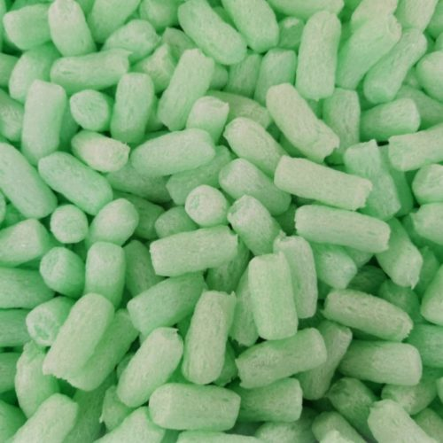
Keményítő alapú (általában kukorica), vízben maradéktalanul feloldódik és komposztálható.
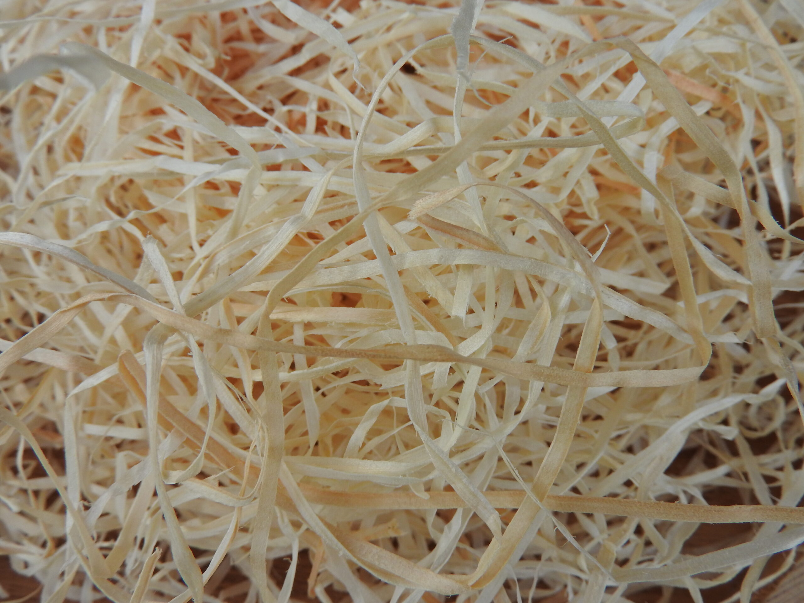
Természetes faforgács, ami rusztikus megjelenést ad. Kiváló borosüvegekhez vagy biotermékekhez.
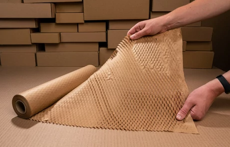
Kihúzva 3D-s rácsot alkot, ami helyettesítheti a buborékfóliát.